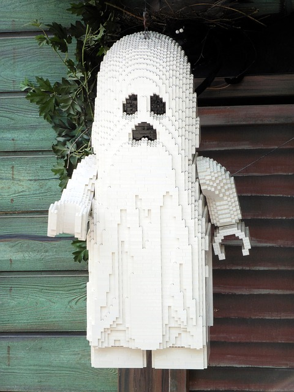

Dzień 1 - Programowanie obiektowe
Python
Wszystko jest obiektem -?
a = 5
b = a
b += 2
print(a)
print(b)a = [2, 3, 4]
b = a
print(a)
print(b)
a[1] = -3
print(a)
print(b)
b = [6, 7]
print(a)
print(b)Paradygmat obiektowy - po co jest?
- Jeśli chcemy zbudować 5 identycznych domów, nie potrzeba nam 5 projektów.
- Jeśli chcemy wyprodukować 4 samochody, nie potrzebujemy oddzielnych projektów.
- Programowanie obiektowe stara się pogrupować podobne „byty” na pewnym poziomie abstrakcji.
Klasa, obiekt
Przykład
- Chcemy napisać program wyliczający wartość rynkową domu w zależności od ilości pokoi, posiadania garażu, ogrodu, ilości pięter, powierzchni, itp…
Pierwsza klasa - House
- Na pewnym poziomie abstrakcji opisuje kawałek rzeczywistości.
- Zawiera dane opisujące możliwe stany.
- Zawiera metody opisujące możliwe zachowania.
- Możemy ją zastosować do wielu budynków.
Pierwszy obiekt - johnHouse
- Konkretny byt.
- Ma konkretne własności.
Konwencja
- pola - zmienne w klasie
- metody - funkcje w klasie
Kod nr 1:
class House:
pass
johnHouse = House()Kod nr 2:
class House:
"""The class that describes houses."""
pass
d = House()Kod nr 3:
class House:
"""The class that describes houses."""
area = 100
def get_price(self):
return 3000 * self.area
d = House()
print(d.get_price())
d2 = House()
d2.area = 123
print(d2.get_price())Po co taka konstrukcja?
- Zmniejszenie luki reprezentacji.
- Ułatwia podział pracy i współpracę między programistami.
- Lepsze grupowanie, czytelność kodu.
- Jak w data science? https://www.kdnuggets.com/2019/08/object-oriented-programming-data-scientists-estimator.html

Pytanie: czy korzystanie z klas jest obowiązkowe w Pythonie?
Ćwiczenia:
Stwórz klasę
Moviez polemtitle. Stwórz dwa obiekty w tym typie.Stwórz klasę
Person, dodaj w niej 5 wybranych przez siebie pól i dwie metody. Stwórz dwa obiekty i poćwicz na nich ustawianie pól i wywoływanie metod.